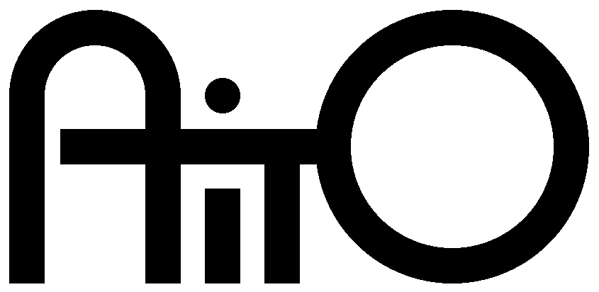
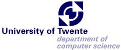

AOSD2002 -- 1st International Conference on Aspect-Oriented Software Development
The following organisations support AOSD 2002 by providing funds, guarantees, or other kinds of services/facilities:

AITO is the Association Internationale pour les Technologies Objets, a non-profit association registered in Kaiserslautern, Germany. The purpose of the Association is promote the advancement of research in object-oriented technology, primarily in Europe, in particular through the organisation of the annual European Conference for Object-Oriented Programming (ECOOP).
AITO
ACM, the Association for Computing Machinery, is an international scientific and educational organization dedicated to advancing the arts, sciences, and applications of information technology. With a world-wide membership of 80,000, ACM functions as a locus for computing professionals and students working in the various fields of Information Technology. AOSD2002 is organized in cooperartion with the SIGPLAN and SIGSOFT Special Interest Groups.
ACM
SIGPLAN
SIGSOFT

The University of Twente is a university that offers both technological and social study programmes. We characterise ourselves as an entrepreneurial university, adapting our research efforts to the benefit of society in general. The entrepreneurial attitude permeates the university: from our students to our professors. It is a state of mind, a mental approach to science and society, which allows us to respond rapidly to new ideas and challenges. We believe that this approach is forged through the nature of our study programmes, in the qualities we seek in appointing new members of staff, and in our research and funding policies. The TRESE group (software engineering chair) of the Department of Computer Science is responsible for the local arrangements.
University of Twente
Department of Computer Science
TRESE group (Software Engineering)